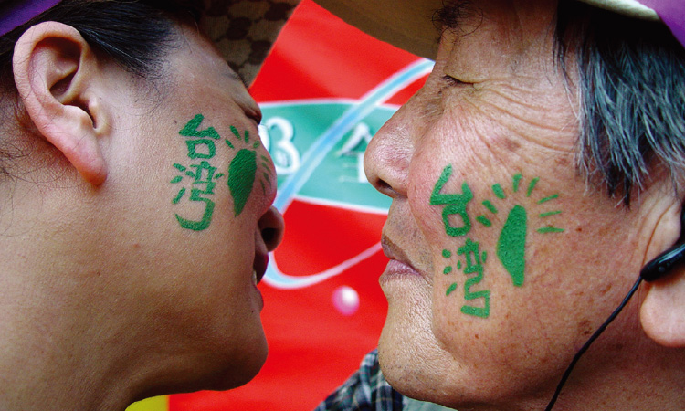

經過民進黨八年執政，肯定台灣主體性、台灣價值已成為全民共識，政黨或政治人物如果違背此原則，將無法得到人民的信任。
2000年，在高度的關切下，民進黨贏得總統大選，完成首次政黨輪替；2004年取得連任，將台灣政黨政治邁向新的里程碑。
八年執政的過程中，我們具體實踐信念，持續推動進步價值。這些執政的成果和經驗，成為「綠色執政、品質保證」的基礎，也將轉化成未來執政的重要基礎及參考。
建立台灣主體性
人民做頭家

| 2000 | 面對歷史，辦理228事件賠償；成立台灣人權綠島園區 |
| 2001 | 鄉土語言列入國小正式課程；成立客家委員會 |
| 2003 | 護照加註「TAIWAN」 開播客家電視台，全球第一個客家電視台 施行「公民投票法」，實現主權在民 |
| 2005 | 廢除國民大會，將修憲權還給人民；施行原住民族基本法 開播原住民族電視台，亞洲唯一原住民專營電視台 |
| 2006 | 終止「國家統一委員會」運作，終止「國家統一綱領」適用 高中課程加入「台灣史」 |
| 2007 | 成立台灣人權景美園區；成立228國家紀念館 民調，主張「台灣是一個主權獨立國家」的民眾佔74%，顯示台灣主體意識已是人民共識 |
| 2008 | 設立白色恐怖政治受難者紀念碑 |
照顧每一個需要照顧的人
所有族群、年齡、性別、
職業的人，都能健全發展
| 2000 | 成立行政院婦女權益促進委員會；擴大勞基法適用範圍及縮減工時； 逐年擴大弱勢家庭學生就學扶助 |
| 2001 | 推出青年首次購屋3%低利貸款；建置113人身安全保護專線 補助弱勢兒童營養午餐；制定原住民族工作權保障法；促進原住民就業 |
| 2002 | 開辦兒童3歲以下就醫免費；發放原住民敬老津貼 全面發放敬老津貼 實施「兩性工作平等法」 |
| 2003 | 低收入戶兒童免費參加國小課後照顧服務；老農津貼由每月3千元逐次調高至6千元 實施就業保險法；制定「兒童及少年福利法」；通過「大量解僱勞工保護法」 |
| 2004 | 開辦5歲以下幼兒教育券、3歲以下幼兒免費醫療；調高身心障礙者生活補助費； 制定勞工退休金條例 |
| 2005 | 實施勞工退休新制；制定原住民族基本法；成立外籍配偶照顧輔導基金 |
| 2006 | 補助弱勢家庭緊急生活津貼3000元 調降就學貸款利率至3.5% |
| 2007 | 完成國民年金立法；核定「10年長期照顧計畫」；實施青年就業促進方案； 輔導新移民適應生活；調整基本工資；放寬低收入戶門檻；擴大5歲幼兒免學費扶助 |
| 2008 | 修正「社會救助法」，擴大照顧對象 |
雄厚台灣的經濟實力
佈局全球、深耕建設
英國經濟學人智庫發布「2006至2010年全球經商環境排行榜」，台灣排名第19名，亞洲地區僅次於新加坡與香港。美國BusinessWeek調查2007年全球資訊科技業100強，台灣廠商14家上榜，僅次於美國的44家，勝過日本的7家及南韓的1家。
| 2001 | 實施「小三通」，持續開放兩岸民間交流 通過「積極開放、有效管理」中國投資計畫 通過「開放大陸地區人民來台觀光推動方案」 |
| 2002 | 台灣加入世界貿易組織(WTO) |
| 2003 | 首辦對岸台商春節包機，迄2006-07年，台商包機已常態化 「二高」全面完工；開發國家花卉園區、蘭花生技園區、農業生技園區； 促進農業升級轉型 |
| 2005 | 員山子分洪道完工 |
| 2006 | 雪山隧道通車 |
| 2007 | 高速鐵路通車；完成南港展覽館新建工程 |
| 2008 | 興建「高雄世貿展覽會議中心」；高雄捷運通車 |
完成桃園機場第二航廈、高雄小港機場擴建；架構中科、竹科、南科西部科技走廊，推動半導體、影像顯示的「兩兆雙星」，以及綠色能源科技的「第三兆元」產業；打消金融呆帳、健全金融市場，強化金融的國際競爭力積極照顧中小企業，鼓勵台商回台投資；投入研發創新、促進產業轉型；建置台灣為亞洲最e化國家之一；發展綠色產業、無線寬頻技術及服務。